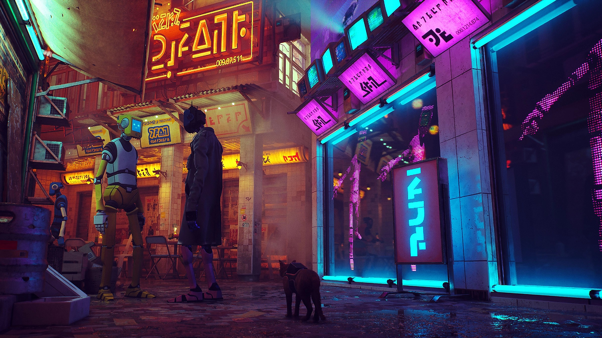
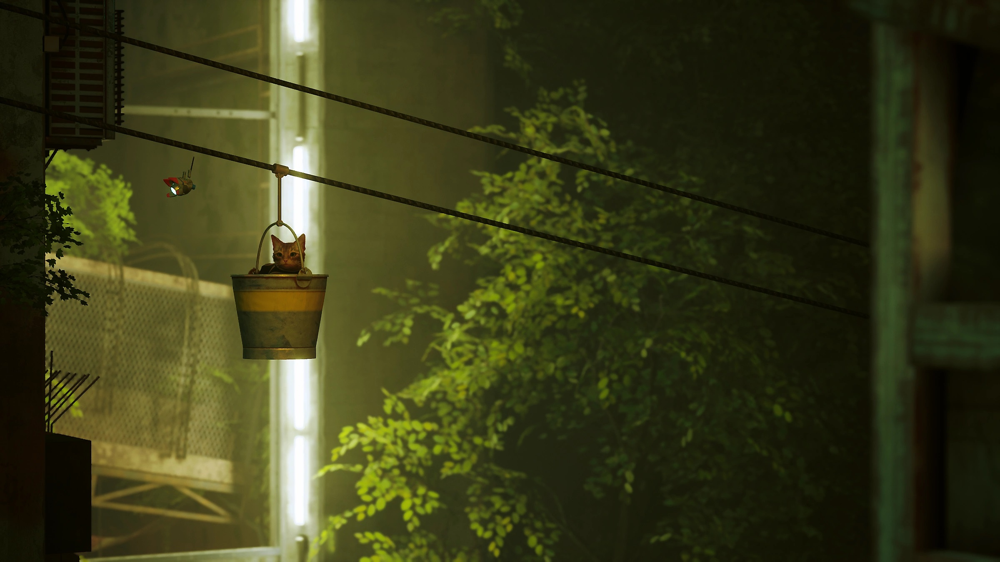
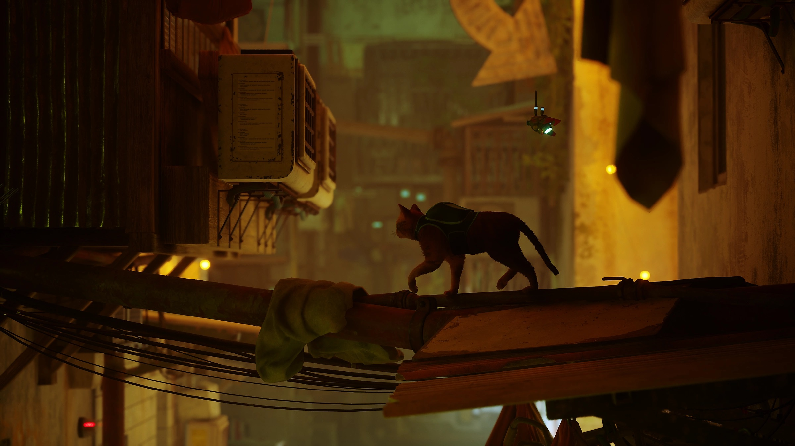

Características clave de Stray

Explora la ciberciudad
Deambula por lo alto y por lo bajo de tus alrededores, defiéndete frente a amenazas imprevistas y soluciona los misterios de este lugar inhóspito habitado tan solo por robots modestos y criaturas peligrosas.

Sé sigiloso
Sé ágil, bobo y a veces tan molesto como puedas con los peculiares habitantes de este mundo extraño.

Hazte amigo de un androide
Por el camino, el gato se hace amigo de un pequeño dron volador, conocido solo como B-12. Con la ayuda de su nuevo compañero, el dúo trata de encontrar una salida.